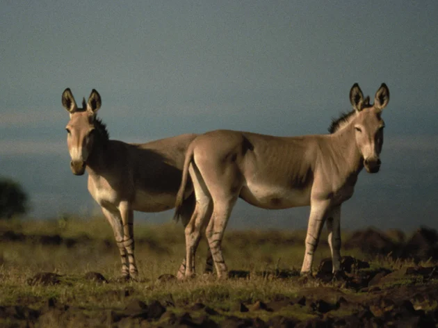
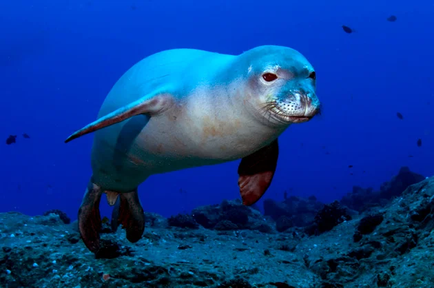
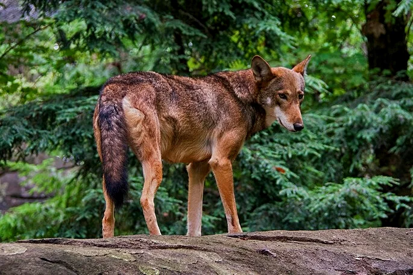
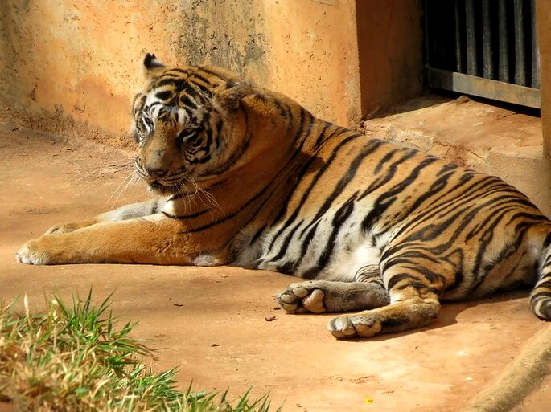
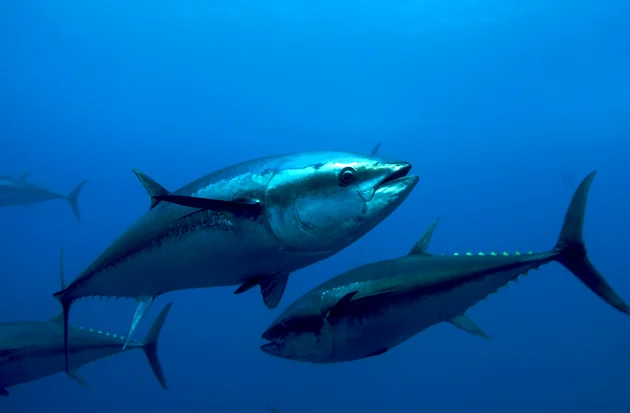
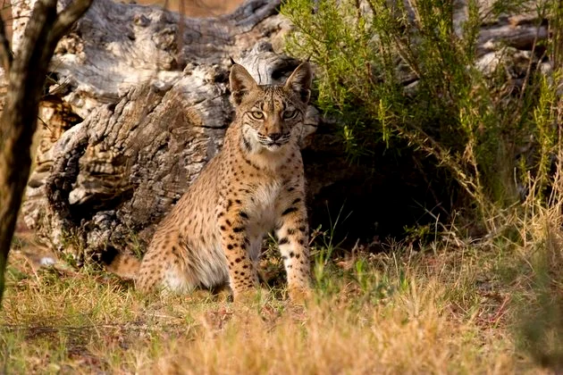
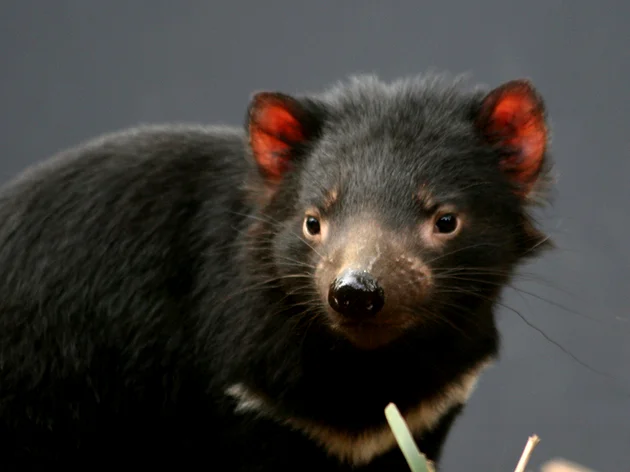
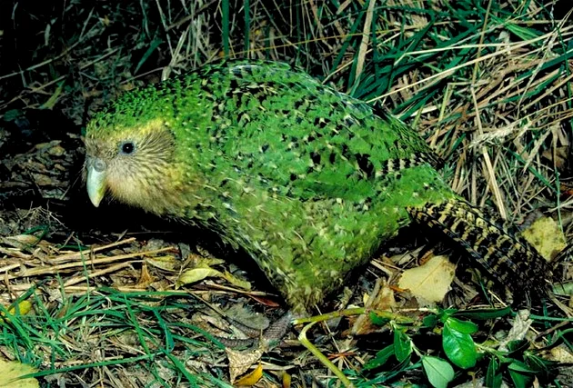
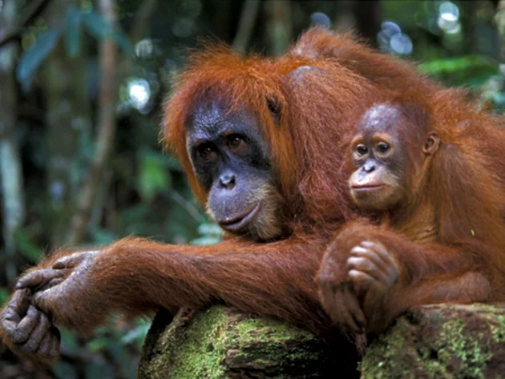
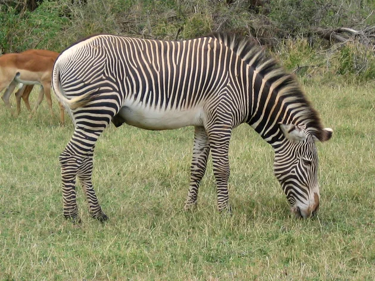

Animais em vias de extinção
1. Asno-selvagem-africano (Equus africanus)
O asno-selvagem-africano é uma espécie criticamente ameaçada de extinção, segundo a classificação da IUCN.Essa espécie é natural do continente africano e sofreu muitos anos com a destruição de seus habitats e a caça predatória. É considerado o ancestral do burro doméstico.
2. Foca-monge-do-Havaí (Monachus schauinslandi)
A foca-monge-do-Havaí é uma espécie de foca que habita o arquipélago havaiano. Ela vem sofrendo muito com a poluição dos mares, caça predatória e o comércio ilegal, dentre outras razões que contribuem para o risco de extinção. Estima-se que atualmente existem aproximadamente 1000 animais vivos. Segundo a IUCN a foca-monge-do-Havaí está classificada em perigo de extinção.
3. Lobo-vermelho (Canis rufus)
O lobo-vermelho é nativo da América do Norte e quase foi extinto na década de 80. As principais causas foram a destruição de seu habitat e a política e caça predatórias da época. Considerado um animal criticamente ameaçado de extinção, atualmente o lobo-vermelho encontra-se em cativeiro com aproximadamente 200 indivíduos da mesma espécie.
4. Tigre-de-bengala (Panthera tigris tigris)
O tigre-de-bengala é nativo do sul asiático, sendo uma espécie considerada criticamente ameaçada de extinção, conforme classificação e estudos da IUCN. O número de tigres-de-bengala diminuiu consideravelmente decorrente do comércio de peles, destruição de seu habitat e a caça ilegal. Segundo pesquisas, atualmente existem menos de 2000 no mundo. No Paquistão, essa espécie encontra-se extinta.
5. Atum-azul (Thunnus thynnus)
O atum-azul é uma espécie de peixe encontrada em maior parte no mar mediterrâneo. O consumo exacerbado desse peixe acarretou numa considerável diminuição da espécie. Considerado o maior e mais valorizado atum do mundo, é muito apreciado na culinária japonesa como ingrediente para os sushis e sashimis. Atualmente, de acordo com a IUCN, o atum-azul é classificado como criticamente ameaçado de extinção.
6. Lince-ibérico (Lynx pardinus)
O lince-ibérico é nativo da península ibérica e atualmente é considerado uma espécie em perigo crítico de extinção, segundo estudos da IUCN. O grande problema enfrentado por esse felino, existente somente em Portugal e Espanha, é a degradação de seu habitat. Segundo pesquisas, atualmente existem menos de 200 indivíduos vivos da espécie.
7. Diabo-da-tasmânia (Sarcophilus harrisii)
O diabo-da-Tasmânia é um marsupial nativo da ilha da Tasmânia, na Austrália. De acordo com as pesquisas e acompanhamento realizado pela IUCN, ele é considerado em perigo de extinção. Os fatores que causaram sua diminuição são a caça ilegal, atropelamento, destruição de seu habitat e doenças.
8. Kakapo (Strigops habroptilus)
O kakapo é uma ave natural da Nova Zelândia e está classificada como criticamente ameaçada de extinção, segundo acompanhamento da IUCN. Conhecido também como papagaio-mocho, o kakapo possui hábitos noturnos. A principal causa da diminuição da espécie foi consequência da caça ilegal para comércio de sua carne e penas.
9. Orangotango-da-Sumatra (Pongo abelii)
O orangotango-da-Sumatra é uma espécie selvagem nativa de Bornéu e Sumatra. Classificado como criticamente ameaçado de extinção pela IUCN, este animal vem sofrendo com a degradação de seu habitat. Outros motivos que contribuem para a diminuição desta espécie é o comércio e tráfico ilegal de animais, além da caça predatória, realizada principalmente por povos indígenas locais.
10. Zebra-de-grévy (Equus grevyi)
A zebra-de-grévy é uma espécie que está classificada como em perigo de extinção. De acordo com dados da IUCN, estima-se que a população deste animal seja inferior a 2400 indivíduos. A principal ameaça para sua extinção está relacionada à perda do habitat e diminuição dos recursos essenciais para a vida, como água e alimentos.